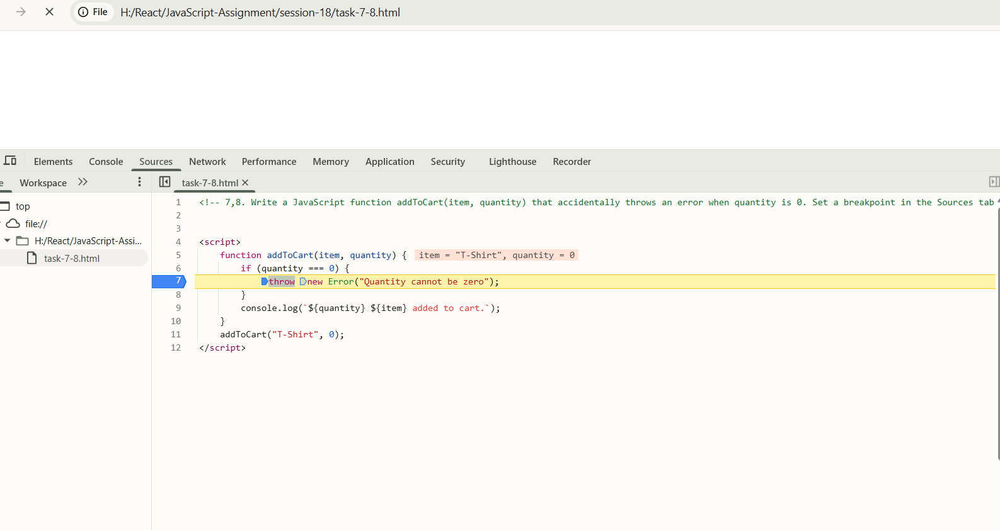

<!-- 7,8. Write a JavaScript function addToCart(item, quantity) that accidentally throws an error when quantity is 0. Set a breakpoint in the Sources tab before the error line, run the function with quantity 0, and inspect the values of item and quantity at the breakpoint.<br><br><em><strong>Hint:</strong> Use the browser's Sources tab to pause execution and check variable values.</em> -->



<script>
    function addToCart(item, quantity) {
        if (quantity === 0) {
            throw new Error("Quantity cannot be zero");
        }
        console.log(`${quantity} ${item} added to cart.`);
    }
    addToCart("T-Shirt", 0);
</script>